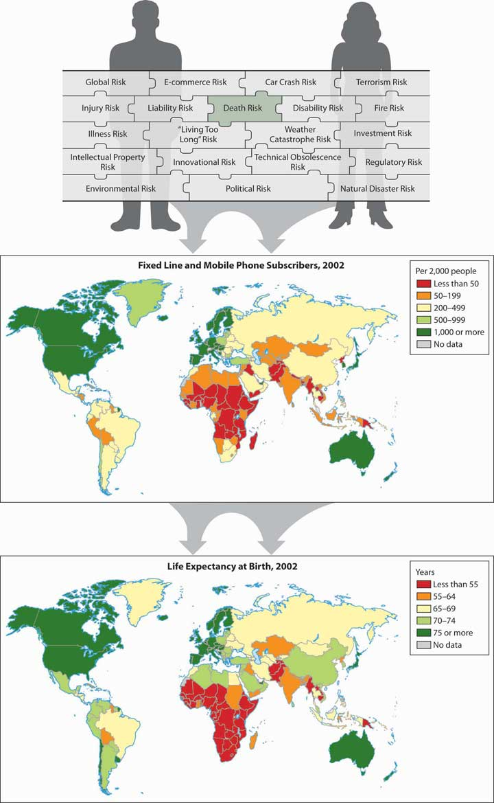
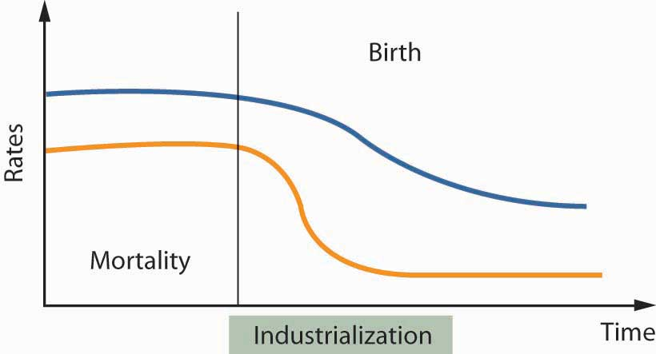
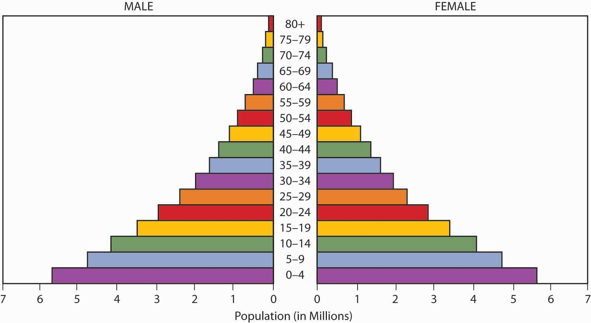
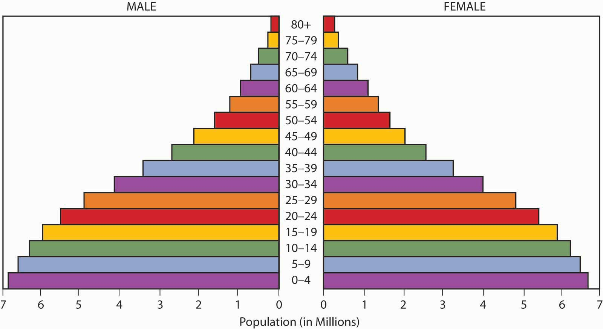
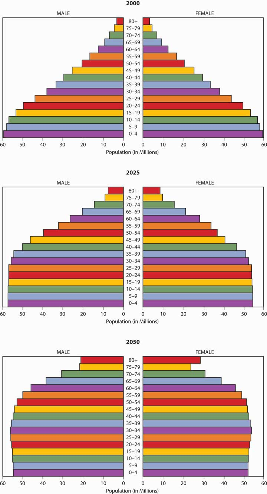
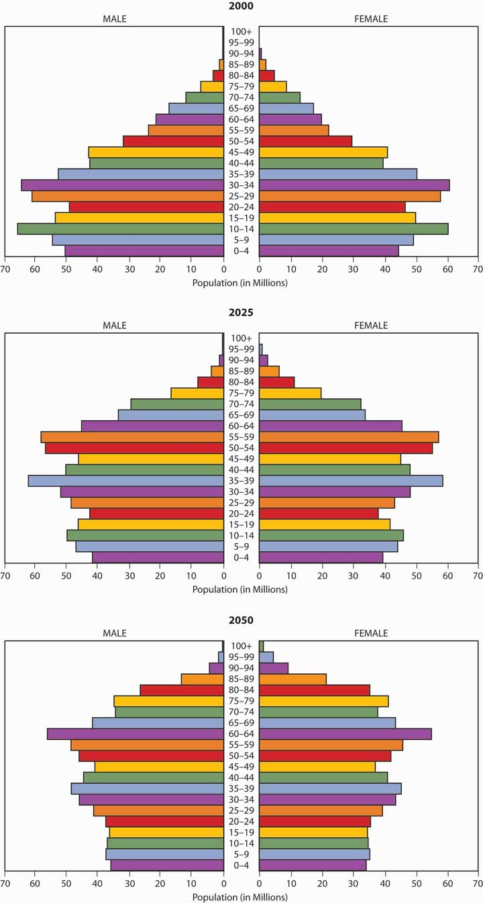
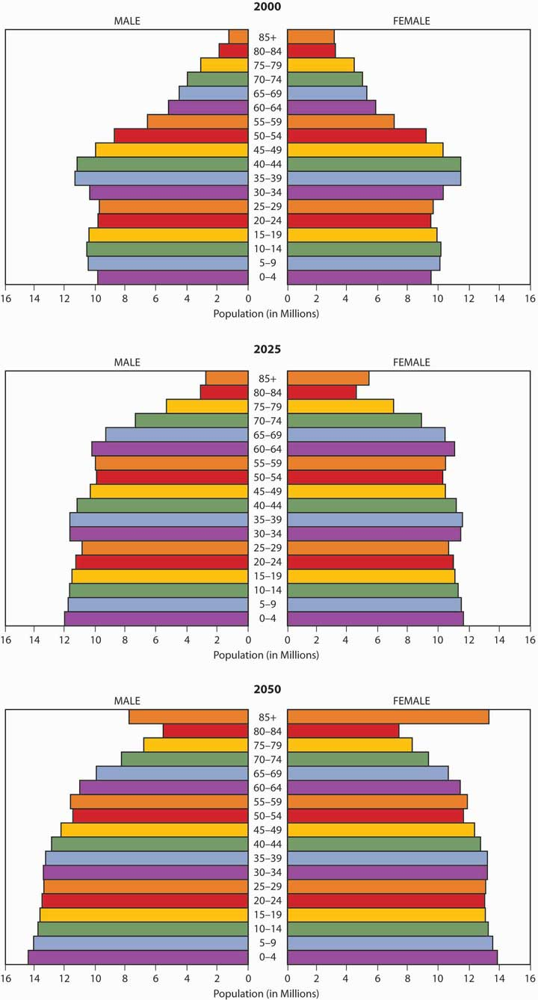

In Part III, we concentrated on the risks to properties and liabilities, and we concluded with Chapter 16 "Risks Related to the Job: Workers’ Compensation and Unemployment Compensation" about the risks in employment. We now begin a discussion of the life cycle and the quality of life risks. This chapter is a general overview of the life cycle risks that will be dealt with in greater detail in the following chapters. Dealing with life risks involves enormous sums of money (roughly speaking, about 40 percent of personal income). The handling of these risks is done by large organizations: the government, pension funds, saving plans, financial institutions, and insurance companies. These institutions directly employ a very large number of people, and they are connected to a large number of other employees (agents, adjusters, doctors, lawyers, suppliers). We will show that the handling of these risks is strongly correlated with some of the key macroeconomic parameters such as national savings, interest rates, the growth of the economy, and demographic developments. This will be done largely from a global perspective.
In this chapter, we shall give a general survey of the risks that are associated with our lives. We will characterize them, offer estimates as to their probabilities, and assess their impact. There are three major classes of risks associated with the life cycle: the risks associated with a premature death; the risks associated with long life (old age, longevity); and the risks associated with our well-being (health risks, disabilities, loss of earning capacity, and unemployment). Most of these risks are related to our physical well-being. However, the last one may be related to external economic parameters, like unemployment. Due to increases in life expectancy, old-age risks are becoming the dominant focus. We will discuss the major changes taking place in areas such as employment patterns, financial instruments, saving patterns, life expectancy, demography, societal forms, dependency ratios, family structure, and the like. To complete the picture and to broaden our horizons, we shall conclude the chapter by discussing important demographic trends that follow technological waves and affect the life cycle risks.
This chapter includes the following topics:
We are in the midst of immense technological developments that are drastically transforming the world we live in every ten to fifteen years. Technological waves are affecting every aspect of our lives: family structure; the social and political structure; the economy; and the way we live, work, eat, spend time, consume, learn, travel, and communicate. Shocks resonate throughout the system as a consequence of accelerated changes. The old tools are quickly becoming outdated. As a result, we need new instruments to deal with the new environment. During the search for new instruments, we also produce very risky behaviors that bring about financial crises, as is the case of the credit crisis and subsequent economic recession beginning in 2008. Thus, innovation and creativity sometimes involve greater levels of risk taking and the potential of systemic breakdowns of the economic systems (see Chapter 1 "The Nature of Risk: Losses and Opportunities").
Technological waves do not spread evenly over the world. They are typically delayed at certain invisible border lines. These border lines can be depicted by the geographical distribution of countries by their developmental stage (see Figure 17.1 "Links between the Holistic Risk Picture and Global Technological Development"). The border lines typically coincide with the border lines of civilizations (the cultural and religious features that tie a certain region together). Many indicators show the level of development that a country has reached: mortality, GDP per capita, and health indicators, for example. On the world map, they all follow quite similar patterns, as we can see in Figure 17.1 "Links between the Holistic Risk Picture and Global Technological Development", which depicts the distribution of phones (number of lines per 1,000 people) and life expectancy at birth. These rankings generally agree with the ranking by many other indicators.
Figure 17.1 Links between the Holistic Risk Picture and Global Technological Development
In this section we elaborate on the risk of a premature death:
Our lives involve uncertainties and risks. Sometimes, the uncertainty relates to the question of whether an event will occur (What if I become disabled? Will I reach retirement age?). In other cases, an event, such as death, will definitely occur; therefore, the risk relates to the timing of the event (all people will die, but we don’t know when). The risk management of individuals is strongly related to mortality because it determines the probabilities of dying and surviving. It is also related to words and concepts like life expectancy and to the measurement of the financial threats created by the life cycle risks. In the following section, we shall further explore the topic of mortality riskLife cycle risk of premature death.: the risk of premature death.
Speaking in terms of the financial threats and ignoring the very real psychological and emotional elements, we can say that the financial risk of a premature death is mainly borne by the dependents of the deceased person because they relied on the income stream generated by the deceased. The risk of old age is mainly borne by the person whose life is being assessed—that is, the need to guarantee the livelihood of that person. The cut-off point to distinguish between a premature death and old age depends on the particular person and family. We shall arbitrarily take a common retirement age, say, sixty-five, as the borderline.
The distinction between different effects of mortality risk was made at the beginning of the twentieth century. Human beings, like machines, were assessed according to their ability to contribute to the economy. A machine is expected to operate during its economic lifetime; it may, however, break down before it reaches its life expectancy, causing its owner to suffer a loss of future income streams. A machine may exceed its economic life, and this situation brings about increased maintenance costs. It may have a deficient production capacity due to some malfunctioning, and this situation involves increased costs and a lower level of production. The analogy between human beings and machines certainly raises ethical questions, and it may be disliked by most readers, but it is a practical approach that may help us characterize the risks and quantify them purely from a financial perspective. Like any other risk, we shall try to assess the probabilities and the intensity of occurrences.
A premature deathDying prior to certain age (commonly, the expected retirement age). will be defined as dying prior to a certain age (commonly, the expected retirement age). The death of a person typically results in a variety of losses: the direct loss is to the dying person because the person is unable to continue enjoying what he or she was doing and still wished to do. Family members and friends suffer a psychological and emotional loss from the disappearance of their loved one. However, the economic lossIn mortality risk, the financial loss experienced by those that depended on a deceased person and the lost future income that would have been earned if the person had not died. is mainly felt by people who depended financially on the deceased person (e.g., spouse, children, parents) and who lost the future income that would have been earned if the person had not died. Of course, there are also business interests that could be damaged; for example, the employing firm that lost a key person who held particularly important know-how or who had exceptionally important and strong ties with suppliers, customers, or regulators. Another common type of loss is that of a partnership that lost a key partner, a situation that may endanger the continuation of the business.
The probability of dying within a defined period is obtained using a mortality table or a life table. In the following section, we shall extend what was said in Chapter 7 "Insurance Operations" concerning mortality. The risk depends, of course, on the individual features of the particular person: genetics, age, health condition, profession, ethnic origin, lifestyle, hobbies, and so forth. We are typically unable to tell in advance who will die, when, and how. Nonetheless, we can use population statistics to get estimates of these probabilities. You will recall the law of large numbers from Chapter 6 "The Insurance Solution and Institutions", which provided predictions of future losses with greater accuracy as the sample of people become larger. So when actuaries look at large populations, they are able to provide scientific estimates of the probabilities of dying in each age cohort. They can tell us the probability that a person celebrating the x birthday will die before reaching the next birthday (at age x + 1). By common actuarial notation, this probability is denoted by qx. The mortality table, which we discussed in Chapter 7 "Insurance Operations", expresses these probabilities for all age groups.
To recap the discussion on the mortality table and mortality curve in Chapter 7 "Insurance Operations", the mortality rate for males is relatively high at birth, but it declines until age ten. It then rises to a peak between the ages of eighteen to twenty-two (often attributed to risk-taking behavioral patterns) and declines between the ages of twenty-three and twenty-nine. The rise is continuous for females above age ten and for males after age twenty-nine. The rise is rather slow until middle age, at which point it begins to accelerate. At the more advanced ages, it rises very rapidly.
A life table (or survival table)Shows how many people are expected to survive at each age out of an initial population. reflects either the probability of survival (one minus the probability of dying), or the number of people surviving at each age. Mortality tables and life tables are essential tools in the hands of actuaries. The actuary needs only one of the tables for making all the required calculations since one table can be derived from the other. A life table can be constructed by following a cohort of people that were born during a particular year over a long period of time and recording all deaths until the last one dies (generation life table). Such an approach is naturally not practical because the follow-up has to continue over a century and creates enormous technical problems: replacing researchers, following people wandering all over the globe, and so forth. Moreover, the results could be of some historical interest but of little practical value because they are influenced by the extreme technological changes (including nutrition, health standards, employment, etc.) that have taken place over time.
The most common way to generate a life table is to use the current mortality rates qx (as reflected in a mortality table). A life table shows how many people, lx, are expected to survive at each age x, out of the initial population. The life table typically starts with a round figure, like an initial population of 1,000,000 people at a particular age. Relying on the law of large numbers and statistical data, the computations (which are beyond the scope of this text) are made to determine the number of people still living at each age out of the entire population.
Life tables (and mortality tables) are constructed for particular purposes; therefore, they are based on specifically chosen populations: people from a particular geographical region, people with special occupations, males and females, retired or preretired populations, widows and widowers, people with or without certain diseases or disabilities, and more. Of special interest are tables for an insured population versus an uninsured population. Many types of mortality tables and life tables exist because they are calculated from different populations according to the particular needs of the actuaries. There are tables for urban or rural populations, tables for people in certain professions, tables for smokers versus nonsmokers, and the like. Notably, tables exist for the entire population or for only an insured population. Insured populations tend to be healthier because they are typically employed and pass medical screenings as a condition of insurability. Therefore, their mortality rates tend to be significantly lower than those of uninsured populations. Such tables are called select tablesThe figures of a mortality table that relate to an insured population where the possible effects of medical examinations used for selecting the terms of insurance may influence the findings.. In contrast, ultimate tablesThe figures of a mortality table that relate to an insured population where the possible effects of medical examinations used for selecting the terms of insurance do not influence the findings. are used to make mortality calculations without the selection effects of medical examination. It is noteworthy that the selection of the period for which a life table is calculated is important because we do not like to have a table that is based on the mortality pattern during a year of plague. To obtain reliable figures, we need fairly large populations and databases, and we have to take great care in data processing.
The typical table used for many actuarial calculations in the United States is known as the Ultimate 2001 Commissioners Standard Ordinary (CSO) Mortality Table. The 2001 mortality table was revised in 2006, as discussed in the “New Mortality Tables” box later. Table 17.1 "Life Table Depicting the Number of Survivors at Age " presents the life table that is derived from the Ultimate 2001 CSO Table. Recall from Chapter 7 "Insurance Operations" that the mortality rates for males and females are different. This fact has implications for the pricing of products used to mitigate mortality risk, as discussed in “Should Life Insurance Rates Be Based on Gender?” also in this chapter.
Table 17.1 Life Table Depicting the Number of Survivors at Age x out of an Initial Population of 1,000,000 People
| Age | Males | Females | Age | Males | Females | Age | Males | Females |
|---|---|---|---|---|---|---|---|---|
| 0 | 1,000,000 | 1,000,000 | 39 | 969,354 | 980,702 | 78 | 556,428 | 663,795 |
| 1 | 999,030 | 999,520 | 40 | 967,861 | 979,496 | 79 | 524,957 | 639,513 |
| 2 | 998,471 | 999,170 | 41 | 966,264 | 978,223 | 80 | 491,853 | 613,900 |
| 3 | 998,081 | 998,910 | 42 | 964,534 | 976,873 | 81 | 457,355 | 586,975 |
| 4 | 997,812 | 998,711 | 43 | 962,644 | 975,427 | 82 | 421,594 | 558,148 |
| 5 | 997,602 | 998,521 | 44 | 960,574 | 973,876 | 83 | 385,109 | 527,478 |
| 6 | 997,393 | 998,341 | 45 | 958,279 | 972,201 | 84 | 348,327 | 495,402 |
| 7 | 997,173 | 998,161 | 46 | 955,739 | 970,383 | 85 | 311,603 | 462,077 |
| 8 | 996,954 | 997,952 | 47 | 952,967 | 968,394 | 86 | 275,280 | 427,675 |
| 9 | 996,734 | 997,742 | 48 | 949,947 | 966,195 | 87 | 239,793 | 393,038 |
| 10 | 996,505 | 997,533 | 49 | 946,783 | 963,780 | 88 | 205,659 | 357,354 |
| 11 | 996,276 | 997,313 | 50 | 943,451 | 961,101 | 89 | 173,426 | 321,236 |
| 12 | 996,007 | 997,084 | 51 | 939,903 | 958,140 | 90 | 143,617 | 285,251 |
| 13 | 995,678 | 996,815 | 52 | 936,087 | 954,873 | 91 | 116,666 | 250,473 |
| 14 | 995,290 | 996,516 | 53 | 931,903 | 951,254 | 92 | 93,048 | 218,701 |
| 15 | 994,822 | 996,187 | 54 | 927,309 | 947,259 | 93 | 72,780 | 188,765 |
| 16 | 994,215 | 995,838 | 55 | 922,208 | 942,873 | 94 | 55,746 | 160,141 |
| 17 | 993,480 | 995,450 | 56 | 916,518 | 938,065 | 95 | 41,746 | 132,867 |
| 18 | 992,615 | 995,042 | 57 | 910,213 | 932,783 | 96 | 30,509 | 107,136 |
| 19 | 991,682 | 994,614 | 58 | 903,259 | 927,009 | 97 | 21,795 | 84,031 |
| 20 | 990,710 | 994,156 | 59 | 895,789 | 920,706 | 98 | 15,187 | 63,991 |
| 21 | 989,720 | 993,689 | 60 | 887,736 | 913,902 | 99 | 10,299 | 48,495 |
| 22 | 988,730 | 993,212 | 61 | 878,983 | 906,581 | 100 | 6,778 | 36,118 |
| 23 | 987,722 | 992,715 | 62 | 869,366 | 898,712 | 101 | 4,316 | 26,159 |
| 24 | 986,704 | 992,219 | 63 | 858,717 | 890,273 | 102 | 2,676 | 18,368 |
| 25 | 985,668 | 991,703 | 64 | 846,944 | 881,246 | 103 | 1,611 | 12,450 |
| 26 | 984,613 | 991,168 | 65 | 834,036 | 871,587 | 104 | 939 | 8,104 |
| 27 | 983,511 | 990,612 | 66 | 819,983 | 861,259 | 105 | 528 | 5,036 |
| 28 | 982,360 | 990,018 | 67 | 804,838 | 850,218 | 106 | 286 | 2,968 |
| 29 | 981,211 | 989,394 | 68 | 788,668 | 838,408 | 107 | 148 | 1,652 |
| 30 | 980,082 | 988,741 | 69 | 771,436 | 825,773 | 108 | 73 | 864 |
| 31 | 978,965 | 988,069 | 70 | 753,199 | 812,264 | 109 | 34 | 423 |
| 32 | 977,859 | 987,348 | 71 | 733,789 | 797,797 | 110 | 15 | 192 |
| 33 | 976,754 | 986,588 | 72 | 713,133 | 782,264 | 111 | 6 | 80 |
| 34 | 975,630 | 985,779 | 73 | 690,798 | 765,602 | 112 | 2 | 31 |
| 35 | 974,479 | 984,911 | 74 | 666,882 | 747,763 | 113 | 1 | 11 |
| 36 | 973,300 | 983,956 | 75 | 641,488 | 728,696 | 114 | 0 | 3 |
| 37 | 972,054 | 982,942 | 76 | 614,603 | 708,365 | 115 | 0 | 1 |
| 38 | 970,752 | 981,851 | 77 | 586,282 | 686,739 | Total | 71,119,302 | 81,344,455 |
Sources: Processed by the authors from the American Academy of Actuaries CSO Task Force Report, June 2002, http://www.actuary.org/life/CSO_0702.asp (accessed April 4, 2009); 2001 CSO Ultimate Table. Used with permission.
In Table 17.1 "Life Table Depicting the Number of Survivors at Age ", we see that the number of male survivors at age twenty-five is 985,668. This means that about 98.57 percent of the newborn males survived until the age of 25, and that about 1.43 percent (the difference) of the males are expected to die prior to reaching this age. The number of survivors at age sixty-five is 834,036. We can say that the probability of a twenty-five-year-old male surviving until age sixty-five is 84.6 percent (834,036/985,668). In other words, 14.5 percent of the twenty-five-year-old males will not reach age sixty-five. We can do similar calculations for people in other age groups. Comparable figures taken from a life table that was relevant a few decades ago show much higher probabilities of dying.
Using a modern life table leads to a very important conclusion: about 10 to 15 percent of males in the working ages of 20 to forty-five years will die before reaching retirement. If we would have made a similar calculation with a typical life table from the 1960s, we would have reached a figure around 20 to 25 percent! In other words, the probability of dying prior to retirement age declined by approximately half during the last fifty years in most developed countries.
In the United States, only 0.8 percent of females die before they reach age twenty-five (from the life table, 1 − [991,703/1,000,000]). About 88 percent of females at the age of twenty-five will reach age sixty-five (871,587/991,703). This means that about 12 percent of the females will die before retirement. Some other western countries have even higher survival probabilities: often 92 to 94 percent of young females in a developed country are expected to attain age sixty-five. In the 1960s and 1970s, the parallel probability would have been only around 82 to 85 percent.
The twentieth century has been a period of unprecedented changes in mortality patterns. Most countries experienced enormous improvements (a drastic decline) in mortality rates. The chart in Figure 17.2 "Mortality Changes as Reflected by Comparisons of the 1980 and 2001 CSO Tables" compares the qx values in the mortality tables over two decades (2001 versus 1980). We see that the qx values declined dramatically. The rate of change is not uniform, however, among various age groups and by gender. What seems to be a very drastic decline of the death probabilities at age ninety-five and above is just a technical result of extending the end of the mortality table from age ninety-nine in 1980 to 120 in 2001. The revisions to the CSO mortality table reflecting historical improvements in the mortality rate is discussed in the box “New Mortality Tables.”
Figure 17.2 Mortality Changes as Reflected by Comparisons of the 1980 and 2001 CSO Tables

Source: American Academy of Actuaries; http://www.actuary.org/life/cso/appendix_b_jun02.xls (accessed April 4, 2009). Used with permission.
Mortality improvements are critical to setting life insurance premiums and reserves (life insurance is a risk management solution for the financial component of life cycle risks and is the subject of Chapter 19 "Mortality Risk Management: Individual Life Insurance and Group Life Insurance"). As mortality rates improve, you may be able to think of yourself as relatively younger as you age. According to the most up-to-date mortality tables, American adults can expect to live, on average, two to four years longer than their parents. The 2001 CSO Preferred Class Structure Mortality Table was adopted by the National Association of Insurance Commissioners in September 2006, a modification of the mortality table issued in 2001.
Age is a very important factor when life insurers assess the classification of an insurance applicant. Others include gender, tobacco use, and health. Like the 1980 tables, the 2001 tables are categorized by gender and show that women as a group live several years longer than men do. (See “Should Life Rates Be Based on Gender?” later in this chapter). Subtables separate tobacco users from nonusers and reflect the decrease in male smokers since 1980 but a slight increase in female smokers. Mortality rates for female smokers in their fifties and sixties are now higher than they were in 1980. Women in that group can expect to pay higher life insurance premiums when the new tables are adopted. Note that race is not a category in the mortality tables. Race-based discrimination is not permitted.
Changes in aggregate health status are difficult to determine (and the tables do not even try), but it is generally accepted that any improvements are offset by more and better medical testing. That is, if more seventy-year-olds are diagnosed with prostate cancer in 2002 than there were in 1982, it is possible the cancer rate has increased—but also true that the detection test is more widely given these days, and that men in 1982 were more likely to die of other causes before even reaching that age. One factor that has clearly worsened since 1980—in fact, it has more than doubled—is the nation’s rate of obesity. Since overweight people are very likely to develop health problems as they grow older, most life insurers will charge higher premiums or even decline to cover people who weigh 30 percent or more above their ideal weight (see “Obesity and Insurance—Litigation or Self-Discipline?” in Chapter 12 "The Liability Risk Management").
Other factors contributing to America’s overall life expectancy have clearly progressed in the last twenty years: medical breakthroughs, including antibiotics and vaccines; public health and environmental efforts; and increased standards of living such as better housing and safer foods. Thanks to developments like these and more, the general mortality rate in the United States has improved about 1 percent per year since early last century. If this trend holds, in 2020 you can take another three years off your age.
Sources: Dr. Rick Rogers, “Will Mortality Improvements Continue?” National Underwriter, Life & Health/Financial Services Edition, August 26, 2002; American Academy of Actuaries, “June 2002 CSO Task Force Report,” June 2002, accessed April 4, 2009, http://www.actuary.org/life/cso_0702.htm; National Association of Insurance Commissioners, “Recognition of the 2001 CSO Mortality Table for Use in Determining Minimum Reserve Liabilities and Nonforfeiture Benefits Model Regulation,” http://www.naic.org/1papers/models/htms/cso-summary.htm; Insurance Information Institute, “Life Insurance Premium Rates to Continue Downward Trend,” October 5, 2005, accessed April 4, 2009, http://www.iii.org/media/updates/archive/press.744841/; Donna L. Hoyert, Ph.D., Hsiang-Ching Kung, Ph.D., and Betty L. Smith, B.S. Ed., “Deaths: Preliminary data for 2003,” Division of Vital Statistics, National Data Statistics Report 53, no. 15 (2005).
What is the economic loss value associated with the case of death? It is hard to answer the question without touching on deep ethical questions.There could be substantial gaps between objective and subjective values, there could be differences between the point of view of the individual versus that of a government, and so forth. There are no objective market values that can be referred to, and there are no mechanisms in which one could purchase a substitute at a given price. Therefore, we have to find indirect ways to estimate the hard-to-measure economic value of a human life, while ignoring psychological or emotional elements that are typically attached to death.
The estimation of the value of human life is needed for private and business purposes. From the private point of view, there is often the need to assess how much financial protection a family needs in case of a breadwinner’s death. From a practical business point of view, there are a variety of needs. For example, there is often a need to assess the loss that an organization will suffer when a key employee dies or to estimate the cash needed to buy out the share of a partner in the case of a partner’s death. We shall focus on the estimation of the economic value of a person from the family’s point of view.
A theoretical correct measurement method may be related to sophisticated theories about personal consumption and savings; however, we do not delve into these theories here. Instead, we focus on the estimated value of human life from the dependents’ point of view. In principle, there are two alternative ways to estimate the value: one is to estimate the value of the income stream that the deceased person would have had if she or he had survived. The alternative way is to estimate the financial needs of the surviving heirs.
Here, we try to estimate the economic value of a human life by calculating the value of the future income stream that will be lost in case of the person’s death. For that purpose, there is a need to estimate the future income stream. The forecast should be limited to a certain period (say, an expected retirement age) when these income streams are expected to discontinue anyhow, even if the person survived beyond that period.
The risk manager must find a way to create a similar cash flow to replace the lost income once the person dies. Because the timing of the death cannot be predicted, it is common to calculate the present value of the income stream to derive a single number (present value was explained in Chapter 4 "Evolving Risk Management: Fundamental Tools"). If we hold this amount and invest it at the same interest rate that is used for the computation of the present value, we can generate the same cash flow whenever it is needed. The use of the present value concept is practical because it can also give us one figure for the estimated economic value of the person.
The purpose of the discussion is to get an idea of the order of magnitude of the value of the lost income stream and to gain certain insights concerning the needs of a typical person. Therefore, we are making some simplifying assumptions: we shall assume a person is expected to retire at age sixty-five and has an expected constant annual income level of $1 (or a constant annual income) to work and earn money beyond retirement age. This approach replaces a more specific calculation for a particular person. Such a calculation would have to forecast the future development of the personal income stream and would involve a prediction of career patterns, promotions, future tax rates, price levels, and so forth.
The importance of the present value technique lies in its use as a tool for planning the needed financial protection against the case of a premature death. The present value of a future stream of earnings is affected by interest rates and by time. The values in Table 17.2 "Present Value of a Future Earnings Stream at 0, 3, and 6 Percent Interest for Period to Retirement" can be used to get a rough estimate for the economic value of our lives, and thus to set the financial protection plan for a family. At 3 percent interest, the economic value of a person in the twenty- to forty-year-old range (or forty-five to twenty-five years to retirement) is about 17.9 to 25.1 times the annual income, or roughly twenty times the assumed fixed annual income. At higher interest rates, say, 6 percent, the present value figure is lower. The present value at 6 percent for the same person would be 13.5 to 16.3 times the annual income, or we could say roughly fifteen times the annual income.
Table 17.2 Present Value of a Future Earnings Stream at 0, 3, and 6 Percent Interest for Period to Retirement
| Duration or Time to Retirement | Age | Discount Rate | ||
|---|---|---|---|---|
| (Years) | (Years) | 0% | 3% | 6% |
| 5 | 60 | 5 | 4.7 | 4.5 |
| 15 | 50 | 15 | 12.3 | 10.3 |
| 25 | 40 | 25 | 17.9 | 13.5 |
| 35 | 30 | 35 | 21.4 | 14.5 |
| 45 | 20 | 45 | 25.1 | 16.3 |
In other words, the economic value of a person with $100,000 annual income is about $2 million (twenty times the income) when the calculation is made under the assumption that we can invest the money at 3 percent, or it is only $1.5 million (fifteen times the annual income) at 6 percent interest. These figures remain steady for almost any age within the range of twenty to forty years. The amount of needed protection declines only at older ages. This present value technique serves as the basis for certain rules of thumb that are often used in the insurance industry and state that the economic value of a person is a certain multiplier of the annual income.See Y. Kahane, Life Insurance, Pension Funds, and Retirement Saving Programs: A Handbook for Business and Personal Financial Planning (Isreal: Ateret Publishing House, 1983). Published in Hebrew.
Nevertheless, common life insurance literature talks about death benefits that are only five to seven times one’s income. A possible explanation to this alarming discrepancy between the needed amount of protection and the actual one may be related to other forms of protection held by U.S. families. One should not deduce that there is a need to run and buy insurance covering fifteen or twenty times the annual income in case of a premature death. One should consider existing properties and other sources of protection (Social Security, pension plans, savings—all discussed in later chapters) that may be included in the portfolio. A person needs to buy protection only for the uncovered balance. Other explanations may be related to the subjective preferences of families: the desire or need to prefer current consumption over future savings, natural optimism, and so forth. These topics are related to complex economic theories that are not handled in this book.
In real life, an income level does not remain constant over long periods. However, the above instrument can also be used for the case that the income stream grows at a constant rate. Income growth (and inflation) has the opposite effect compared to discounting. If we assume, for example, that the cash flow grows at an annual rate of 3 percent, and the relevant interest rate is 6 percent, we can assume instead a constant income stream and discount it at a net interest rate of approximately 3 percent (i.e., 6 percent minus the 3 percent growth rate). This is a good approximation. Note that using this method with fast-growing income streams results in a low net interest rate, which in turn increases sharply the present value of the stream. To handle streams that are not constant and do not grow at a constant rate, one must perform a detailed present value calculation, a technique beyond the scope of this text.
Discounting in the present value method makes the distant future cash flows less significant. The present value of $1 received forty-five years from now is only $0.26 at an interest rate of 3 percent, and it is only $0.07 with a discount factor of 6 percent (refer to the appendixes at the back of the text for computation tables to aid in such analyses). Because of that, our unrealistic assumption that the annual income is constant over time is not that important because the future income streams have a smaller effect on the total present value of the lifetime income stream.
Another implication of this effect is that the economic value of our life is roughly similar for a wide range of ages. For example, at 6 percent interest, the present value of the stream for twenty-five years is only somewhat lower than the value of a stream for forty-five years (13.5 versus 16.3). If we assume that people plan to retire at age sixty-five, this means that the lost value for a person who dies at age twenty (loss of forty-five years) is not much higher than that of a person who dies at the age of forty (loss of twenty-five years).
An alternative way to estimate the financial loss in case of a premature death is to estimate the needs of the surviving members of the family who depended on the deceased person. The particular needs differ from one family to another; however, certain needs are quite common when the person is a breadwinner for the family. A detailed example of a hypothetical needs analysis with respect to the risk of premature death is presented in the appendix to this chapter.
Most insurance companies and insurance agents are equipped with software to prepare a family needs analysis like that described in the appendix. These programs are useful as a marketing tool by the agents, but they could be used by families in designing their plans. Many students are unmarried and therefore do not acknowledge the importance of family needs planning. Moreover, people tend to avoid thinking about what could happen in case of their death or their spouse’s death. However, it is of utmost importance to do so once in a while (at least every ten years) and to keep updating it in accordance with changing personal status and needs (children, marriage, divorce, etc.). It will save many worries for you and your family in case something does go wrong in your life.
The financial planning process means creating a cash flow plan that could easily be translated to present values. It is expected that this method gives a more accurate estimate of financial needs and results in somewhat lower values than the ones obtained by the first approach (the present value of the lost income stream). This expectation is based on the assumption that the lost income approach overestimates the needs (mainly due to the fact that the dead person stops consuming). It is noteworthy that this hypothesis is not supported by practical experience, and we often find that the two methods result in very similar figures. The reason for this could be found in the empirical evidence that there is a very strong correlation between the family income and consumption. People get used to a standard of living that is strongly connected to the family’s disposable income, and therefore the financial needs tend to reflect the current consumption pattern of the family while the breadwinner is still alive.
The above discussion has shown that the risk of death prior to retirement age is substantial. The probability of occurrence in developed countries could be around 10 to 12 percent for males and around 8 percent for females. As the present value estimation reveals, the amount of loss is typically around fifteen to twenty times annual income. Therefore, it is not surprising that many institutions are dealing with these risks and offer some sources of financial protection. Such arrangements will be the topic of Chapter 19 "Mortality Risk Management: Individual Life Insurance and Group Life Insurance".
In this section you studied mortality, the risk of premature death:
In this section we elaborate on the following:
Old-age issues have many aspects: social, psychological, economic, and political. In this text, we focus mainly on the risk management and financial aspect of old age. In the previous discussion, we showed the probability of reaching the old-age group. If we define the group of aged people as those that exceed a common retirement age (like sixty-five), we can easily find the probability of reaching this age by using a life table. We concluded that the probability of a young person reaching retirement age is about 88 percent for males and about 92 percent for females. In the following section, we shall first analyze the probabilities and then discuss the measurement of the financial burden associated with longevity risk. The financial burden is the amount of money that is needed to finance the retirement period. Therefore, we need an estimate for the expected length of this period. Such a measurement can be derived from the life table, and it is related to the concept of life expectancy. Hence, in the following sections we shall discuss survival probabilities and life expectancy figures.
Survival probabilities can be derived from Table 17.1 "Life Table Depicting the Number of Survivors at Age " of the previous section. We can see that out of the initial population of 1,000,000 people at age zero, about 985,668 people will be living at age twenty-five. At age sixty-five, the expected number of survivors is 834,036. We can say that the probability of a twenty-five-year-old male surviving to age sixty-five is 84.6 percent (834,036/985,668). About 59 percent of all the people that have reached age sixty-five are expected to survive beyond eighty years old (491,853 out of 834,036). In the 1950s, this figure was substantially lower, typically below 40 percent. The survival rates in less-developed countries are by far smaller, and in many cases are very close to zero.
Longevity riskLife cycle risk of living too long, such that one’s advanced age hinders one’s ability to continue adequately providing for oneself. can be defined simply as the risk of living too long such that one’s advanced age hinders one’s ability to continue adequately providing for oneself. To characterize the risk, we have to show also the costs involved in aging. Old age may bring about severe financial implications for the individual. Surviving for many years after retirement involves high costs of current maintenance (housing, clothing, food, entertainment, and the like) and frequently involves increased medical expenses (hospitalization, senior citizen housing, special care, and the like). Retired people often do not have the resources needed to finance these costs. They often lack current income sources and do not have sufficient properties. Moreover, they often face difficulties in generating adequate income from the properties they do hold. The risk of extended life without sufficient financial resources could be severe and more frequent than people think. Surveys often show that aged people have far lower income than they used to have during their employment period, and many report financial stresses.
In the following section, we shall give a general review of the cost of aging, from the individual’s point of view. Like the cost of premature death, we have to talk in general terms about populations and averages rather than relate to particular individuals. The first term to be discussed is life expectancy (at birth). We shall then discuss the average number of postretirement years.
The financial burden of aging is a direct function of the number of years that the individual will live beyond retirement. A common term that is related to the issue is life expectancyMeasures the average length of life in a population; in a stable population, it would be an approximation of the average age of deceased people.. Although this term is commonly used in the literature, there are misunderstandings concerning its meaning. Thus, we start by explaining this measure. Life expectancy measures the average length of life in a population. In a stable population, it would be an approximation of the average age of deceased people.
Life expectancy figures are calculated from the life table. Assume for a moment that mortality has a strange pattern: all people are expected to die during the year and to die immediately before they touch the birthday cake just prior to the next birthday. From the life table, actuaries can determine the total number of years that the cohort of people presented has lived (which is simply the sum of all lx values from age zero to the end of the life table). If this figure is divided by the number of people that were assumed to be alive at age zero, the average age of death, or life expectancy, is the result. Actuaries do make a small correction to this figure: we have assumed that all people die at the end of the year, whereas people normally die throughout the year, so we have to deduct 0.5 from the average figure we got. We can deduce from the life table in Table 17.1 "Life Table Depicting the Number of Survivors at Age " that all 1,000,000 males of the cohort are expected to live a total of 77,119,302 years, or 77.119 years per person on the average. Deducting 0.5, we see that life expectancy at birth as determined from the life table is 76.6 years. Similarly, life expectancy for females is 80.8 years. These values are based on the CSO table and are higher than the life expectancy of the general population.
Life expectancy depends, of course, on the nutrition, sanitation, life style, genetics, and general well-being of the population. Therefore, it is no wonder that it is chosen as one of the leading indicators for the developmental stage of a country. Because of that, we have this measure for most countries in the world, including the least-developed countries.
In a cross-section analysis, World Health Organization (WHO) statistics show that life expectancy for the entire population (males and females) is below sixty for less developed countries (in some countries it could even be as low as forty). On the other hand, developed and advanced countries experience life expectancy figures around seventy-seven to eighty-two (for the entire population). Will life expectancy continue to increase at the same rate in the future? Is there a limit to the human life span? These are critical questions for retirement planning. Scientists cannot give us a definite answer yet. Some claim that the body cells are designed to last only for a certain period; for example, heart cells are assumed to have a limited number of beats, perhaps 2 billion. Others believe that we are on the verge of deciphering the mechanism that determines the aging of cells, and we will learn the way to control it. Meanwhile, we experience a continuous increase in life expectancy due to the cumulative effect of gradual improvements in a wide variety of medical technologies. Modern medicine can replace failing organs through transplants, open clogged arteries, and administer drugs that immunize against and cure many diseases.
Human society is the only one among all animals that values longevity as a goal. It is not improbable that this value will be challenged in the future, and that societies finding it difficult to cope with the soaring costs of retirement and of health-related expenses will put constraints on medical treatment to aged people. This involves ethical problems that go far beyond the scope of this discussion.
During the last century, the developed countries have experienced an unprecedented increase in longevity. This increasing life expectancy is in direct correlation to the sharp reduction in mortality rates. At the beginning of the twentieth century, life expectancy at birth (corrected for mortality in the first few months after birth) was around forty-five to fifty years in most currently developed countries. A century later, at the beginning of the twenty-first century, life expectancy is around seventy-six years for males and approximately eighty years for females. In other words, life expectancy at birth has increased on the average by one year for every three to four calendar years! In 1900, the life expectancy of white males and females in the United States was 48.2 and 51.1, respectively. The parallel figures in 2002 are 75.1 and 80.3, respectively. The figures for the entire population differ, of course, from the figures of the CSO tables, which are based on the insured population, which in turn is typically healthier than the general population. Therefore, the life expectancy found in the CSO tables tends to be higher than that of the general population. The latest findings from the U.S. Census Bureau provide an excellent illustration of the life expectancy improvements in the United States over time, as seen in Table 17.3 "Expectation of Life at Birth for the U.S. Population as Measured in Various Points in Time (1970–2005)".U.S. Census Bureau, “The 2009 Statistical Abstract,” The National Data Book, http://www.census.gov/compendia/statab/cats/births_deaths_marriages_divorces/life_expectancy.html (accessed April 4, 2009).
Table 17.3 Expectation of Life at Birth for the U.S. Population as Measured in Various Points in Time (1970–2005)
| Year | Total Population | Male | Female |
|---|---|---|---|
| 1970 | 70.8 | 67.1 | 74.7 |
| 1975 | 72.6 | 68.8 | 76.6 |
| 1980 | 73.7 | 70.0 | 77.4 |
| 1985 | 74.7 | 71.1 | 78.2 |
| 1990 | 75.4 | 71.8 | 78.8 |
| 1995 | 75.8 | 72.5 | 78.9 |
| 2000 | 77.0 | 74.3 | 79.7 |
| 2005 | 77.8 | 75.2 | 80.4 |
Source: U.S. National Center for Health Statistics, National Vital Statistics Reports (NVSR), Deaths: Final Data for 2005, Vol. 56, No. 10, April 24, 2008, Accessed April 5, 2009, http://www.census.gov/compendia/statab/tables/09s0100.xls.
Longevity risk relates to the duration of the postretirement period, and for that purpose we need to consider conditional life expectancyLife expectancy after retirement.—that is, the life expectancy after retirement (or some other relevant age). These figures are calculated from the life table in a similar way to life expectancy at birth. For example, to calculate the conditional life expectancy at age fifty-five, we have to sum all lx values in the life table (Table 17.1 "Life Table Depicting the Number of Survivors at Age " in the previous section) from age fifty-five to the end of the table to get the number of years lived by the cohort of the people aged fifty-five. This sum must then be divided by l55, the initial number of people in that age. Again, since we used the rough assumption that all people die exactly at their birthdays, even though they die randomly throughout the year, we have to make a correction. Simply deducting half a year (0.5) from the average, we get the life expectancy.
Table 17.4 "Average Number of Remaining Years of Life by Sex and Age (2005)" presents the average number of remaining years of life for the U.S. population. These figures are calculated in the same way as explained above, but they are calculated for the entire U.S. population and not from the 2001 CSO mortality table (Table 17.1 "Life Table Depicting the Number of Survivors at Age " in the previous section) and would therefore be different.
Table 17.4 Average Number of Remaining Years of Life by Sex and Age (2005)
| Age (Years) | Entire Population | Male | Female |
|---|---|---|---|
| 0 | 77.8 | 75.2 | 80.4 |
| 1 | 77.4 | 74.7 | 79.9 |
| 5 | 73.5 | 70.8 | 76.0 |
| 10 | 68.5 | 65.9 | 71.0 |
| 15 | 63.6 | 61.0 | 66.1 |
| 20 | 58.8 | 56.2 | 61.2 |
| 25 | 54.1 | 51.6 | 56.3 |
| 30 | 49.3 | 47.0 | 51.5 |
| 35 | 44.6 | 42.3 | 46.6 |
| 40 | 39.9 | 37.7 | 41.9 |
| 45 | 35.3 | 33.2 | 37.2 |
| 50 | 30.9 | 28.9 | 32.7 |
| 55 | 26.7 | 24.8 | 28.3 |
| 60 | 22.6 | 20.8 | 24.0 |
| 65 | 18.7 | 17.2 | 20.0 |
| 70 | 15.2 | 13.8 | 16.2 |
| 75 | 12.0 | 10.8 | 12.8 |
| 80 | 9.2 | 8.2 | 9.8 |
| 85 | 6.8 | 6.1 | 7.2 |
| 90 | 5.0 | 4.4 | 5.2 |
| 95 | 3.6 | 3.2 | 3.7 |
| 100 | 2.6 | 2.3 | 2.6 |
Source: processed by the authors from U.S. National Center for Health Statistics, National Vital Statistics Reports (NVSR), U.S. Decennial Life Tables for 1999–2001, United States Life Tables, vol. 57, no. 1, August 5, 2008, Accessed April 5, 2009, http://www.census.gov/compendia/statab/tables/09s0101.xls.
To estimate the financial needs to confront the risk of longevity, we must look more carefully at the meaning of life expectancy. We will assume a very basic model, where people join the labor force at the age of twenty and retire at the age of sixty-five. In addition, assume that life expectancy is seventy-five and is not expected to change, and that interest rates can be ignored. Assume also that the annual consumption of a retired person is similar to that of a working person (a realistic assumption in view of studies showing that the total consumption is quite stable, although its composition changes significantly with age). These basic parameters seem to generate a simple retirement model: during forty-five years of work, people are supposed to accumulate sufficient funds to cover an additional ten years, that is, put aside about 10/45, or 22 percent, of their annual income.
There are two major flaws in this basic model, and both of them stem from a misinterpretation of the concept of life expectancy. First, relying on an average number (life expectancy) may be fine for a financial institution that holds a large portfolio of many insured people. An individual, however, is not supposed to plan her insurance needs according to average figures and must instead prepare for the extreme cases. Life expectancy is an average figure. A high proportion of retired people will live far longer than the assumed life expectancy (age seventy-five). What will all these people do when the funds are depleted at the end of the assumed ten-year postretirement period?
Second, when people refer to life expectancy, they commonly refer to the published figure, which is life expectancy at birth (the average age of death). The remaining life expectancy is a complicated function of age. If life expectancy at birth is seventy-five years, the remaining life expectancy at the age of sixty-five may be substantially higher than ten years insofar as those who reach age sixty-five have survived the childhood diseases, the motorcycle accidents, the risks of military service, and so forth. The U.S. Vital Statistics, for example, show that the life expectancy at birth of white males in 2005 was 75.2 (see Table 17.3 "Expectation of Life at Birth for the U.S. Population as Measured in Various Points in Time (1970–2005)"). However, the remaining (conditional) life expectancy at age sixty-five is not just ten years, but rather 17.2 years, as shown in Table 17.4 "Average Number of Remaining Years of Life by Sex and Age (2005)" above.
The above figures mean that when the U.S. white male in our model reaches retirement, he had better have sufficient funds for 17.2 years, on the average, rather than just ten years, as the model has assumed (and this figure is subject to the first comment about the use of averages in personal planning). Putting aside savings for 17.2 years over forty-five years of assumed employment is almost double the calculation that assumed a 10/45 ratio.
The problem of females is even more pressing in practice. Females are the biologically more resilient gender, and their life expectancy at birth is typically greater than that of males. In 2005, for example, life expectancy at birth for white U.S. females was 80.4 (compared to only 75.2 for males). However, females tend to retire earlier than men, say, at the age of sixty, and the remaining life expectancy at that age is twenty-four years. Earlier retirement, however, also means a shorter working period, perhaps only forty years. Traditionally, many women also spend a few years out of the wage-earning labor force to raise the family. The average working period for women can actually be reduced to thirty years or less. One needs to be a financial magician to be able to accumulate enough savings to finance a postretirement period of twenty-four years over approximately thirty years of work. The longevity differences between men and women are reflected in prices for life insurance, as discussed in “Should Life Insurance Rates Be Based on Gender” below.
As a group, young male drivers cause more automobile insurance losses than do young female drivers. A few states, however, no longer allow automobile insurers to charge different rates for males and females. Similarly, over a decade ago, the Supreme Court ruled that employers using annuities to fund retirement benefits could no longer collect higher contributions from women, who were expected to live longer than men, in order to make equal annuity payments during retirement. Employers continuing to pay retirement benefits through annuities were forced by the Supreme Court to use unisex tables. That is, the mortality rates of men and women were pooled to produce an average life expectancy greater than that for men alone and less than that for women alone. Retirement benefits went up for the women and down for the men involved.
Should life insurance rates be made gender neutral as well? The quotes displayed here were requested from Insweb (http://www.insweb.com), an online insurance quotes and distribution company, in August 2005. They show that the premiums for a ten-year term life insurance policy (described in Chapter 19 "Mortality Risk Management: Individual Life Insurance and Group Life Insurance") of $250,000 for a twenty-five-year-old male of perfect health and family history, weight appropriate to height, and no tobacco use, are higher than those for a female with the same attributes. For example, the rate is $13.18 per month for a male as opposed to $11.90 for a female, as shown in the table of quotes below. For newer quotes for your specific age and needs, you can check on line.
When we compare a particular man to a particular woman of the same age and seemingly the same state of insurability (health, lifestyle, occupation, financial condition, and so forth), the man may outlive the woman, but, as you know, insurers pool cohorts of insureds rather than the individual. Insurers observe difference in average experience for large groups of males and females to justify different life rates based on gender, arguing that doing so creates actuarial equity. That is, premiums should differ because expected outcomes (death benefits multiplied by probabilities) are different for groups of males and females. In the past two decades, the gender mortality gap has begun to close. While female longevity has risen, male life spans have increased at a faster rate, due in part to medical advances in treating conditions like heart disease, which traditionally kills more men than women. Recently, companies have begun to incorporate data from the early 1990s. Yet even with a smaller gap between men’s and women’s longevity, insurance rates for women are still lower than for equally aged and healthy men.
Questions for Discussion
| Monthly Premium for a 10-year Level Term Life Policy* | ||||||||
|---|---|---|---|---|---|---|---|---|
| Male | 25 | 30 | 35 | 40 | 45 | 50 | 55 | 60 |
| 100,000 | $8.76 | 8.76 | 9.01 | 10.88 | 13.01 | 17.94 | 24.57 | 33.25 |
| 250,000 | 13.18 | 13.18 | 13.39 | 15.73 | 22.10 | 28.00 | 41.65 | 62.48 |
| 500,000 | 20.83 | 20.83 | 21.25 | 25.08 | 32.63 | 46.55 | 73.10 | 112.63 |
| 1,000,000 | 27.13 | 27.13 | 26.97 | 33.93 | 55.68 | 87.87 | 141.95 | 221.00 |
| Female | 25 | 30 | 35 | 40 | 45 | 50 | 55 | 60 |
| 100,000 | $8.33 | 8.33 | 8.50 | 10.03 | 11.48 | 14.71 | 18.45 | 26.35 |
| 250,000 | 11.90 | 11.90 | 12.11 | 14.45 | 19.55 | 25.71 | 30.23 | 43.50 |
| 500,000 | 17.85 | 17.85 | 18.28 | 22.53 | 26.54 | 37.85 | 53.13 | 78.20 |
| 1,000,000 | 32.04 | 31.45 | 32.30 | 29.58 | 46.11 | 67.86 | 102.00 | 152.15 |
| * Quotes based on a composite of participating carriers, which have at least an A rating by S&P. Your rate may differ due to your health, smoking, or other activities. Rates subject to underwriting and state availability. InsWeb is a service offered by InsWeb Insurance Services, Inc., a licensed agency in most states (CA #0C24350). | ||||||||
Source: InsWeb, rates effective as of August, 2005, used with permission
Sources: Ron Panko, “Closing the Gender Gap,” Best’s Review, August 2000, accessed April 4, 2009, http://www3.ambest.com/Frames/FrameServer.asp?AltSrc=23&Tab=1&Site=bestreview&refnum=10974; Insweb, http://www.insweb.com, accessed August 2005.
The rough retirement model that has been discussed so far ignores the interest rate, changes in the purchasing power of money, and changes in the general standard of living. It must be corrected to deal with these factors, which can be done in an accurate actuarial manner, but the following less accurate way gives a better general picture.
A retirement plan has the advantage that its financing can be spread over a relatively long period: the employment period and the retirement period. Over such a long period, interest rates cannot be ignored. Thus, we shall examine some simple interest rate calculations. Imagine a person saves $1 per year over forty-five years. The amount saved by the end of the period (the future value of the stream of savings—as discussed in Chapter 4 "Evolving Risk Management: Fundamental Tools") depends on the interest rate. If the money is saved at 0 percent interest, the person will accumulate $45. At 2 percent interest, the amount saved by the end of the period will be $72. (The first dollar gained interest for forty-five years, the second for forty-four years, and so forth.) In other words, interest added approximately 60 percent to the $45 principal. At 4 percent, the amount jumps to $121, meaning that for each dollar saved, the (compounded) interest contributes approximately another $2. At 6 percent, the interest effect is even more impressive: each dollar saved brings in close to $4 in interest. With such a high interest rate, the total amount of the savings at the end of the period is about $212, approximately five times larger than the amount saved. These computations are summarized in Table 17.5 "The Effect of Interest Rates on the Accumulation of Retirement Savings" below.
Table 17.5 The Effect of Interest Rates on the Accumulation of Retirement Savings
| (Future Value of an Annuity) | ||||
|---|---|---|---|---|
| Interest Rate | ||||
| Saving Period (Years to Retirement) | 0% | 2% | 4% | 6% |
| 1 | 1.0 | 1.0 | 1.0 | 1.0 |
| 15 | 15.0 | 17.3 | 20.0 | 23.3 |
| 25 | 25.0 | 32.0 | 41.6 | 54.9 |
| 35 | 35.0 | 50.0 | 73.7 | 111.4 |
| 45 | 45.0 | 71.9 | 121.0 | 212.7 |
This simple illustration demonstrates that the interest rate cannot be ignored in long-range planning. One must make a decision: Who should work for retirement—oneself or the interest rate? And the answer is obvious. Being able to finance retirement throughout forty-five years, at an interest rate of 6 percent, means that the financial burden that we discussed earlier could be about five times smaller than with zero percent interest.
There are a couple of caveats to the above discussion:
From the individual’s point of view, the interest rate is an exogenous parameter. However, there is a very strong connection between retirement savings and market interest rates. The above discussion demonstrates that people are expected to save a substantial part of their income just to finance their retirement. These savings are a major component of the aggregated national savings, which in turn affect economic growth and the market interest rate.Martin Feldstein, “Social Security, Induced Retirement, and Aggregate Capital Accumulation,” Journal of Political Economy 82, no. 5 (September/October 1974): 905–26.
The interest rate is a major economic parameter that affects and is affected by a variety of complicated political and economic processes. These processes are becoming very complex in the current “flat world” global economy, and they create frequent changes and fluctuations in the interest rates. This introduces a substantial financial risk factor into financial and retirement planning. It is hard to predict future interest rates in the world markets without a reliable, complex econometric model. One feature, though, seems to be quite certain: most developed countries are going to suffer a reduction in the numbers of the working-age population, and they will therefore experience a concomitant decline in the growth potential. The developing countries, on the other hand, will have substantial population and industrial growth, but they will probably soon be facing constraints on their growth due to market limitations. This may indicate that the real interest rates will not exceed, for example, 3 percent in the long run and that the risk factor resulting from interest rate uncertainties is significant.
Some countries have successfully stabilized their social insurance systems (as will be discussed at length in Chapter 18 "Social Security") by directly and indirectly guaranteeing interest rates. The current trend, however, puts the entire burden of interest risks on individuals. This element requires special treatment in the risk management of our personal risks. Low interest rates means that, on the average, the retirement of most people will be financed mainly by the direct contribution (by employers, employees, and the government), and only a relatively small part will be financed by interest accumulation. And the result will be that the burden of financing the retirement system will remain quite heavy.
In the United States, the government does not guarantee market interest rates, but it does influence them through monetary policy. The Federal Reserve (the Fed), for example, directly controls the federal funds rate. This is the rate that private banks charge each other for loans, and it is manipulated to alter the supply of money. The federal funds rate is a determinant of the prime rate, or the interest rate that banks charge their most credit-worthy customers. On the other hand, the rate that banks pay customers on their savings investments will generally be something below the prime rate (so that positive returns on lending activities are not canceled out). In light of the 2008–2009 economic recession, the Fed adjusted the federal funds rate to a target between 0 and 0.25 percent on December 16, 2008, in a radical move designed to increase lending.Board of Governors of the Federal Reserve System, “Press Release,” December 16, 2008, http://www.federalreserve.gov/newsevents/press/monetary/20081216b.htm (accessed March 10, 2009). In response, prime was lowered to 3.25 percent.Wall Street Journal, Market Data Center: Money Rates, March 9, 2009. http://online.wsj.com/mdc/public/page/2_3020-moneyrate.html. Accessed March 10. 2009. While this was good news for people holding outstanding bank notes, mortgages, or credit card debt, it was bad news for those counting on interest rates to help fund their retirements. Of course, banks are hardly the only source of interest rate returns for individuals saving for retirement.
Interest rates higher than those offered through private banks are available to individuals investing in mutual funds, money market accounts, corporate debt, and other long- and short-term investment vehicles. The interest rate will vary considerably depending on the source, but there is a national indicator often used as a benchmark in rate making: the U.S. Treasury bill (T-bill). T-bills are government bonds paying guaranteed, fixed interest rates. Because the government cannot default on its loan obligations, the yield on a T-bill can be said to be a risk-free rate of return. Thus, investments in the private sector must offer a risk premium to entice investors into taking on greater risk. No one would invest in risky private securities if the same return was available from risk-free government bonds. The ten-year annual T-bill rate for 2008 was 3.66 percent. In comparison, the rate on AAA-rated corporate bonds was 5.63 percent. The average ten-year annual T-bill rate since 2000 has been 4.6 percent. However, this compares with a 6.7 percent average for the decade of the 1990s.Board of Governors of the Federal Reserve System, “Federal Reserve Statistical Release: Selected Interest Rates,” http://www.federalreserve.gov/releases/h15/data.htm (accessed March 10, 2009).
The crux of this discussion is that investing for retirement entails its own longevity risk due to interest rates. Consider, for example, an individual who retired in 1999 at the age of sixty-five. What if he were born ten years later and retired in 2009 at the age of sixty-five? Examining interest rates alone, it is hard to imagine this retiree being better off today than if he retired ten years ago. The boom period of the 1990s produced much higher returns, on balance, than are available today. Certainly, one’s personal investment savvy is an important factor in the performance of his portfolio. However, when even the risk-free rate of return yielded 2 percent more during the 1990s, it is easy to see how a conservative, unsophisticated investor would be in a better position if he had to rely on his retirement savings in that decade. Equity investments, too, performed better in the 1990s than in the 2000s. The Dow Jones Industrial Average trended upward for the entire 1990s, peaking on the last day of the decade. The 2000s has seen more volatility in the Dow and a sharp dropoff in 2007.Dow Jones Indexes, “The Dow Through History and Interactive Timeline,” http://www.djaverages.com/ (accessed March 10, 2009). Diversification can improve one’s portfolio, but in a time when both the equity and bond markets are not what they once were, it may be impossible to restore what was lost. Indeed, many individuals who felt secure in building their nest eggs for retirement in the 1990s and again in the mid 2000s have seen those gains erased by the 2008–2009 recession when the Dow lost 50 percent of its value by March 2009. Some of the specific effects will be discussed in Chapter 21 "Employment-Based and Individual Longevity Risk Management". In short, just as longevity risk can be equated as the risk of living too long, so too can it be examined from the standpoint of investing for too long in volatile markets. We cannot control when we are born, nor can we predict the future, so saving for retirement is a delicate balance involving short- and long-term investment mixes and asset diversification.
Most countries do not have a mandatory retirement age but some do. Given the great importance of the retirement age in determining Social Security and other pension arrangements (see Chapter 18 "Social Security" and Chapter 21 "Employment-Based and Individual Longevity Risk Management"), and due to the significant implications for socioeconomic issues, it is time to reexamine this parameter. We do not intend to go into the complex issue of the optimal retirement age, but it is clear that this topic justifies a deep and thorough study from a balanced social, political, and economic point of view.
One possible way to mitigate the increased longevity problem is by deferring the retirement age.Orio Giarini, Dialogue on Wealth and Welfare, Report to the Club of Rome (Oxford, England: Pergamon Press, 1980). When retirement ages were first determined by the government of Germany in 1873, less than 40 percent of the people survived to the age of sixty-five. Today, 80 to 85 percent of males and more than 90 percent of females in developed countries live to that age and beyond. People reaching the age of sixty-five today are often in good physical and mental shape and are often willing to continue working. Some countries are actively moving toward the deferment of the retirement age, and some are already accepting a retirement age of sixty-seven. However, this trend conflicts with another major force of the declining demand for labor.Orio Giarini and Patrick M. Liedtke, The Employment Dilemma: The Future of Employment (Geneva, Switzerland: Dossiers of the Geneva Association, 1997). The present production capacity of developed countries is large, and it can be achieved with only part of the potential labor force. To mitigate the effects of the resulting growth of unemployment, some European countries are reducing the monthly working hours of employees. There is an inevitable clash between the forces driving toward a higher retirement age and the pressures on young populations that have to join the labor force.
Longevity is one of the most important risks that affect our economies. Planners of retirement systems typically focus on the economic and financial aspects and often ignore the basic demographic considerations. Nonetheless, the drastic changes in longevity and life expectancies should not be ignored.
In this section you studied the following about longevity, the risk of living too long:
In this section we elaborate on the following:
Health and disability riskLife cycle risk that physical and mental well-being will be diminished throughout one’s lifetime. is the third category of life cycle risks. They can be defined as the risks that our physical and mental well-being will be diminished throughout our lifetime. In the case of disease or disability, one will have to pay for increased costs (hospitalization, surgery, doctors, medicines, and prolonged courses of treatment), while still having to finance the regular living expenses, like food, housing, and debt payments for oneself and for the other members of the household.
With costs escalating, health care is becoming the number one retirement-related problem in the developed economies. As with all other risks, the most effective treatment seems to be prevention, which can be accomplished through dieting, exercising, preemptive medicine, and a variety of other ways. Indeed, some of the sicknesses of old age stem from behavior during our youth and could probably be treated at that time.
On average, some of the lifetime health-related costs are concentrated around the very young ages, but most are concentrated around the final years. Thus, due to the increased life expectancy and the fact that older people often suffer from all manner of medical problems, health costs are becoming associated more and more with retirement problems.
World Health Organization (WHO) statistics show a positive correlation between the development level of the economy and the percentage of gross domestic product (GDP) spent on health-related costs. Typically, health-related expenditures reach 6 to 13 percent of GDP in developed nations such as United States, compared to 2 to 9 percent in the less-developed countries. In terms of per capita figures, the gap is very noticeable: an average annual per capita expenditure of $20 to $200 in the less-developed countries, compared to $1,800 to $4,000 in developed economies (the dollar values used conversions of the local currencies at international dollar rates).
The World Bank and the Global Health Organization suggested a new index to measure the global burden of disease: disability adjusted life years (DALY). It combines weighted information about morbidity and mortality, and it is expressed in terms of the numbers of healthy years lost. Each state of health is assigned a disability weighting on a scale from zero (perfect health) to one (death). To calculate the burden of a certain disease, the disability weighting is multiplied by the number of years lived in that health state and is added to the number of years lost due to that disease. Years of life in childhood and old age are assigned lower values in the weighting process. DALY is discounted to better reflect future burdens (an annual interest rate of 3 percent interest is assumed). It is not a perfect indicator and has a substantial degree of subjective judgment and uncertainty,Trude Arnesen and Erik Nord, “The Value of DALY Life: Problems with Ethics and Validity of Disability Adjusted Life Years,” British Medical Journal 319 (1999): 1423–25. but it is a fairly useful instrument for describing a complex problem by a single measure. A complementary measure is the quality adjusted life years (QALY), which measures the years lived in good health and is used to calculate healthy adjusted life expectancy (HALE). Published by the WHO for the entire population at birth, the HALE figures run in the range of thirty-five to forty-five years for the least-developed countries, around fifty to sixty years for more developed countries, and around sixty-five to seventy-five years for most progressive nations. The difference between the life expectancy and HALE is a measure of the average equivalent number of years lost due to bad health and disability.
The expectation of lost healthy years at birth does not show a clear-cut distinction between the least-developed and most-developed countries. In some of the least-developed countries with the poorest health conditions, the number of years lost due to poor health can be fairly low—even three to four years—simply because life expectancy itself is very low (thirty-five to forty years). In others, it can be as high as eight to eleven years, compared to a life expectancy of around sixty to sixty-five years. In the developed countries, the variation of this figure is somewhat lower, and the expectation of lost healthy years at birth runs around six to nine years. A better measure might be the ratio between the expected lost years and the life expectancy at birth. For the developed countries, this figure typically runs around 10 percent, compared to 15 to 18 percent for the least-developed countries.
The main problem is that a substantial part of the years lost due to poor health occurs during the retirement period. A better analysis would be found in the ratio of lost years to life expectancy at retirement (although some lost years relate to the preretirement period). Calculating these ratios with WHO data for the life expectancy of sixty-year-old males shows that these ratios are very high (67 to 100 percent) in the least-developed countries and in the 35 to 45 percent range for developed economies. These ratios show that health concerns are becoming a major part of the retirement issue.
About half of all deaths of adult males and about a quarter of all deaths of adult females are due to cardiovascular diseases, hypertension, and renal diseases. Another quarter of all deaths of adult males and about half of all deaths of adult females are related to cancer. In other words, about three-quarters of the deaths of the adult population are related to these two major groups of sickness. Major breakthroughs in these areas may lead to a remarkable decline of death rates, and this may lead to a further substantial increase in life expectancy (a reduction of mortality probabilities in all age groups by half can increase life expectancy at birth by about five years).
Important advances in medicine are expected in the future due to the improved knowledge and understanding of genetics and complex biochemical processes, better screening devices, smarter surgical technologies, and improved care (and maybe even due to improved understanding of the balance between body and spirit). All these will affect a variety of medical problems such as cancer, heart diseases, diabetes, strokes, neurology and gerontology, metabolic diseases, and more. Certain factors may interfere, delay, and even stop the development of such conditions. Among these factors could be economic and financial forces, global epidemics of new diseases, contamination and pollution, and political factors.
The sophistication of medical procedures cannot arrive without increased costs. Part of these increases is concentrated at the young ages. There are many conflicting factors; some tend to increase health costs for the young population, while others decrease them. For example, in developed countries, highly paid women may prefer not to have repeated pregnancies, and the use of surrogates for having children may increase. Technological developments may even enable families to conceive and nurture a fetus outside the human womb. On the other hand, genetic testing is becoming much more precise, so fewer families will have children suffering from physical and mental disabilities. (On the other hand, the ability to save the very young fetus may increase the prevalence of other birth defects.)
For the older part of the population, most factors operate in one direction: toward a continuous increase in medical and health costs. Among these are a variety of surgical procedures meant to replace or fix problems of aging or failing organs (transplants, angioplasty), special aids (hearing aids, dentures, vision support, mobility instruments), and new expensive drugs. In developed countries, conditions such as diabetes, obesity, and depression are becoming more prevalent as contributing factors in the causes of death for older age groups. Diseases that once killed people (like Tuberculosis and Polio) long before the above conditions could have a significant health impact have all but been eradicated.
Particular health-related risk management solutions will be handled in greater detail in Chapter 22 "Employment and Individual Health Risk Management", but at this point we would like to say a few words about the probabilities. Unlike the mortality and longevity cases, we have no health and disability tables from which the relevant probabilities could be derived. There is an objective difficulty in getting the detailed data needed for the analysis of such a complex issue. Unlike death, disability is often a reversible event; it could be partial or full, and it could be temporary or permanent. Moreover, the event may be defined in a variety of ways: medical (e.g., the loss of a particular limb), psychological, or functional (there are people with severe disabilities—such as blindness—who can function better than many other healthy people). We can only hope that technological developments will enable us in the near future to use better databases and resolve these issues. Due to these reasons it is difficult to create the equivalent of mortality tables or life tables for the health area and, thus, estimates of the probabilities. However, the first steps have already been made in that direction with the WHO resources described previously.
The probabilities of dying and surviving depend greatly on the particular population studied in a given mortality table. Recall that the 2001 CSO mortality table is based on the insured population in the United States. However, the study was divided also into two subpopulations: smokers and nonsmokers. Some selected figures were taken from the statistics to demonstrate the potential wide differences between the mortality and survival rates of two distinct populations. Simultaneously, we can get some important and useful information about the potential impact of smoking.
Table 17.6 The Number of Survivors at Age x out of an Initial Population of 1,000,000 (Ultimate Figures) as Derived from the USA 2001 CSO Table
| Age | Male | Female | ||
|---|---|---|---|---|
| Nonsmoker | Smoker | Nonsmoker | Smoker | |
| 0 | 1,000,000 | 1,000,000 | 1,000,000 | 1,000,000 |
| 15 | 994,822 | 994,822 | 996,187 | 996,187 |
| 20 | 990,790 | 990,165 | 994,176 | 993,937 |
| 30 | 980,995 | 974,651 | 989,048 | 986,419 |
| 40 | 970,024 | 954,815 | 980,487 | 971,858 |
| 50 | 948,455 | 913,895 | 963,645 | 941,426 |
| 60 | 898,373 | 824,017 | 920,087 | 861,264 |
| 65 | 848,793 | 744,298 | 880,502 | 793,026 |
| 70 | 772,499 | 636,113 | 824,182 | 703,167 |
| 80 | 514,495 | 353,797 | 630,748 | 446,153 |
| 90 | 154,508 | 79,032 | 298,023 | 150,271 |
| 99 | 11,361 | 4,302 | 51,122 | 19,743 |
Sources: Processed by the authors from the American Academy of Actuaries CSO Task Force Report, June 2002, http://www.actuary.org/life/CSO_0702.asp (accessed April 4, 2009); 2001 CSO Ultimate Table.
As derived from Table 17.6 "The Number of Survivors at Age ", the probability of a nonsmoking male surviving to age sixty-five is 84.8 percent, whereas that of a smoker is only 74.4 percent. In other words, the probability of dying before the age of sixty-five is 15.2 percent for nonsmokers and 25.6 percent for smokers. Smoking takes an even greater toll at higher ages. The probability of survival to age eighty is 51.4 percent for a nonsmoking man, while that of a smoker is only 35.4 percent. The probabilities for females can easily be derived from the above table. The differences between smoking and nonsmoking females are also high, although slightly lower than those for males.
In this section you studied the following risks to health throughout one’s lifetime:
In this section we elaborate on the following:
In this section we focus on the impact of the technological waves described in the Links on demography, the social structure, and our health.This section is based on Yehuda Kahane, “Technological Changes, the Reversal of Age Pyramids and the Future of Retirement Systems,” European Papers on the New Welfare, February 2006, no. 4, pp. 17–47. These waves are responsible for the growing cost of the age-related processes that mainly affect well-being during the retirement period and the need to countermeasure them by early preventive treatment. They will also affect the future retirement systems. The current retirement systems (in the form of nationalized social insurance programs and union pension funds, discussed in Chapter 18 "Social Security" and Chapter 19 "Mortality Risk Management: Individual Life Insurance and Group Life Insurance") are becoming products of the past in urgent need of major revisions. Popular solutions to the retirement problems are expected to become unsuitable to the populations they serve (as expressed by the rapid erosion of the value of saving plans around the globe at the end of 2008).
Although retirement may not seem to be the most pressing of issues in developing economies, it needs to be addressed without delay. Retirement systems are key to financing the other, more immediately imminent problems of these economies. The future retirement system will likely take the form of mandatory privatized plans, to be supported by some form of governmental social security system that will take care of special cases that cannot be handled by the private sector. This approach has already been successfully adopted by some nations (see “Does Privatization Provide a More Equitable Solution” and “The Future of Social Security” in Chapter 18 "Social Security").
The development of a country triggers major changes in birth and mortality patterns, which, in turn, results in dramatic changes in life expectancy, the age structure of the population, and dependency ratios. Developed countries enjoy declines in both mortality and birth rates, better sanitation and health, improved nutrition, increased use of hospitals, greater accessibility to doctors, and more. During the development phase of a country, birth rates and fertility rates decline as well, but at a much slower pace than mortality. It often takes a few decades for the number of births per mother to reach a significantly lower level. This outcome is not just a technical matter of faster spread and wider use of contraceptives, but a deeper cultural (and religious) issue. The World Health Organization (WHO) statistics show that in many less-developed countries, the use of contraceptives is limited to just 5 to 15 percent of the population, compared to about three-quarters of the population in the developed countries. The interaction with declining mortality means that the number of births declines slowly, but the number of surviving children per mother grows rapidly. The average number of births per woman can be around five to six in the least-developed countries, and this fertility rate slowly declines to around two births per woman. At fertility rates around two per mother, the natural growth of a population stops (or even turns into a slow decline). The fertility ratio continues to drop to around 1.5 and lower—meaning that these populations are shrinking, unless there is a significant inflow of immigrants in a country.
The immediate result of these trends of mortality and birth patterns is the experiences of “baby booms.” This is expressed by growth in the number of surviving children. In the absence of major migration, the population structure is quite predictable for several decades (almost a century, in fact). During the first few years, there is remarkable growth in the number of school-aged children, and two decades later, a substantial increase in the figures for university students, then another four decades of a large work force, followed by a few decades with a large population of retired people. The baby boom turns into a geriatric boom! Together with the decreasing mortality of adults, there is drastic growth in the number of people needing some old age services. Concurrently, by the time the baby boomers get old, the gradually declining birth rates would reach the point of lowest proportion (and often also the absolute number) of young children. Figure 17.3 "Changing Birth and Mortality Patterns in Developed Economies" offers a schematic explanation for the baby boom phenomenon.
Figure 17.3 Changing Birth and Mortality Patterns in Developed Economies
The mortality and birth patterns described above affect the age structure of the population. This is best perceived through a population pyramid, a graphical presentation of the age structure (distributions) of the population (in percentages or in absolute numbers). Because the age structure of a population is typically quite similar for males and females, the graph is almost symmetrical and looks like a pyramid. The population pyramid is essential for the understanding of dependency ratios and retirement policy problems. We will discuss these issues after describing at some length the changing patterns of population pyramids in countries that are experiencing rapid technological changes.
An examination of almost any agrarian economy typically shows a pyramid with a very large base (many young children) and a very pointed top (a very small number of old people). In such populations, the older people (over age sixty) are typically less than 5 percent of the population, whereas children below the age of fifteen can constitute around 40 percent. High mortality rates are also the main reason for the fast shortening of the bars at the higher age groups. These patterns characterize the pyramids of some of the countries that are expected to be among the top twenty largest countries by population within the first half of the twenty-first century. The pyramid for Ethiopia, with its very wide base, in Figure 17.4 "Age Pyramid for Ethiopia, 2000" serves as example of this general pattern. Those for Congo (Kinshasa), Nigeria, Pakistan, and the Philippines are quite similar.
Figure 17.4 Age Pyramid for Ethiopia, 2000
Source: U.S. Census Bureau, International Data Base.
Observing the development of the population pyramid of a country undergoing an industrial revolution immediately reveals the changing pattern. During the first years, the youngest age group (the base of the pyramid) gets wider due to the sudden reduction in mortality rates, which is not accompanied by an immediate decline in birth rates. The U.S. Bureau of the Census forecasts for Ethiopia in 2025 are presented in Figure 17.5 "Age Pyramid for Ethiopia, 2025". A comparison to the diagram in Figure 17.4 "Age Pyramid for Ethiopia, 2000" demonstrates the differences. Note the widening of the base of the pyramid due to the increased number of surviving children. The next age groups do not decline as fast as before due to the drastic reduction in infant mortality. Thus, the length of the bars does not decline as time passes. Note also the widening of the bars at the older ages at the top of the pyramid due to the generally declining mortality.
Figure 17.5 Age Pyramid for Ethiopia, 2025
Source: U.S. Census Bureau, International Data Base.
Figure 17.6 Population Pyramid Summary for India, 2000–2050
Source: U.S. Census Bureau, International Data Base.
A few decades later, as birth rates start to decline, the baby boom comes to an end, and the base of the pyramid gets narrower. Some of the developing countries are already showing this pattern, as demonstrated by India in Figure 17.6 "Population Pyramid Summary for India, 2000–2050", from 2000 to 2025, and to 2050. Figure 17.6 "Population Pyramid Summary for India, 2000–2050" shows how declining mortality rates quickly lead to a situation where most people who survived the early years continue to live for many years thereafter. Therefore, at any future point in time, the bars describing young age groups move upward (as the group gets older), but the length of the bar remains fairly constant. This makes the pyramid less and less pointed in appearance. After a few decades, when birth rates are significantly lower, the lower part of the pyramid becomes rectangular, or pillar-shaped.
The drastic decrease of births creates a situation in which we see a fully reversed age pyramid. Japan serves as an excellent example of this point. Similar patterns can be seen in western European countries. The pyramid of Germany serves as a good example of a country in which older people (above age sixty) are typically more than one-fifth, and sometimes even one-quarter of the entire population. The populations in France, Italy, and the United Kingdom follow similar patterns.
Two large countries deserve special mention. China has an age structure similar to that of a matured, developed country, but it has not experienced the natural evolutionary baby boom (see Figure 17.7 "Population Pyramid Summary for China, 2000–2050"). This is the result of the very strictly enforced birth control introduced by the Chinese government in recent decades. On the other hand, the United States, still has a rectangular-shaped population pyramid rather than an inverted pyramid (see Figure 17.8 "Population Pyramid Summary for the United States, 2000–2050"). The main reason for this anomaly is the absorption of many new immigrants into the population of the United States.
Figure 17.7 Population Pyramid Summary for China, 2000–2050
Source: U.S. Census Bureau, International Data Base.
Figure 17.8 Population Pyramid Summary for the United States, 2000–2050
Source: U.S. Census Bureau, International Data Base.
The population structure is often translated into dependency ratios; that is, the ratios of dependents (children and people beyond working age) to the number of people in the working-age group. These ratios are quite stable over time, despite the drastically changing population structure. People in the working-age groups are typically one-half to two-thirds of the population, as you can see in the U.S. population pyramid of Figure 17.8 "Population Pyramid Summary for the United States, 2000–2050". In agricultural countries, the number of children is large, but the number of elderly people is small. Dependency ratios tend to be around 75 to 100 percent. Countries in the middle have even lower dependency ratios (around 50 percent and sometimes even less). This is the result of complex trends: the birth rate and number of children has already declined, the number of elderly people has not yet increased substantially, and the baby boomers are already working adults.
The ratio between the older people and the younger ones is a more sensitive measure of the developmental stage. It changes dramatically: the ratio of people aged sixty-five or over to children below age five, for example, can be 3.5 to 4.0 in developed countries, compared to only 0.3 to 0.5 in the least-developed countries. This ratio gives a better idea of the future retirement problems: because most children are expected to survive until retirement, it shows how many retired people will have to be supported by one person in the working-age groups. It has been suggested that, in China, one child will eventually have to take care of two parents, four grandparents, and eight great-grandparents!
The 2007–2008 global economic recession and increased unemployment rates may be symptomatic to the changes driven by the technological changes of our time. One can no longer expect to be engaged in the same occupation throughout one’s lifetime. Most people will have to change their occupations and professions several times during their careers and will change workplaces quite frequently throughout their lives. In such an environment, a traditional retirement arrangement based on a particular work place, with limited mobility, becomes inappropriate. Firms will be created, experience mergers and acquisitions, go through major reorganization, and sometimes collapse within fairly short periods if they are not capable of continuously adapting to the new markets, new competitors, new products, and new methods. The dramatic changes throughout the world’s financial markets are the signs of a transition that will completely reshape the retirement systems of the world and handling of life cycle risks.
In this mobile and volatile work world, we will probably have to get used to continuously high unemployment rates, and may therefore need to structure a new system that enables unemployed people to survive during periods of joblessness at working age. Furthermore, the design of optimal retirement systems that will meet our needs in later years requires a good understanding of social, economic, and demographic trends that are by-products of profound technological changes with the power to completely reshape our environment, our needs, and our way of thinking.
Today, we recognize single-parent families, zero-parent families, same-sex families, blended families, virtual families, families of convenience, and more. A large proportion of women are being attracted to employment outside of their homes. The old concept that a man must be the primary bread-winner of the family, while the spouse is supposed to take care of the home, is dying. Both men and women work and take turns taking care of the home and family. A traditional retirement system, based mainly on the husband financing his wife’s old age, is no longer relevant or valid.
In the heated public debates of recent years on the problems of Social Security (the topic of our next chapter), pension plans (the topic of Chapter 21 "Employment-Based and Individual Longevity Risk Management"), retirement systems, and the aging population, the financial viability of social insurance programs in modern economies (and especially in the United States) has been the focus of particular attention. Whatever the arguments in the debate, our environment is clearly changing rapidly and dramatically, and current popular solutions to retirement problems are expected to become obsolete very soon. If we are to prepare for completely new challenges, we have to ensure that the solutions are feasible for people over a relatively long period. This requires a good understanding of future economic and social trends.
In this section you studied the following global demographic trends in relation to life cycle risks:
In this section, the income continuation needs for a single-parent family, the Dowds, will be evaluated to see how much life insurance is necessary. Although the various types of life insurance products will be discussed at length in Chapter 19 "Mortality Risk Management: Individual Life Insurance and Group Life Insurance", this exercise is intended to satisfy the needs analysis approach to dealing with mortality risk. The risk management component of the financial planning process will be used to look at the family’s present resources, income needs, and insurance needs in the event of the wage earner’s death. Coverages for property and casualty, health, disability, and retirement are covered in Case 1 of Chapter 23 "Cases in Holistic Risk Management".
The Dowd family has three members:
Liz and Bob see a pediatrician at least once a year. Sharon had a routine checkup about six months ago. All three are apparently healthy.
Sharon is a branch bank manager whose gross yearly income is $50,000. Her former husband lives in another state and does not pay alimony or contribute to child support.
A balance sheet and cash flow statement are important in evaluating Sharon’s current ability to meet her needs and in establishing postloss objectives. Sharon has constructed Table 17.7 "Sharon Dowd’s Balance Sheet (End of Year Market Value)" and Table 17.8 "Sharon Dowd’s Annual Cash Flow Statement". On the balance sheet, you may wonder why the value of furniture and other personal property is only $10,000. The sums listed are liquidation values; these items probably have a replacement value between $30,000 and $40,000. But our concern, in the event of Sharon’s death, is how much the items would sell for if they had to be liquidated to meet family income needs. Unlike houses and automobiles, limited demand exists for used furniture and clothing.
Table 17.7 Sharon Dowd’s Balance Sheet (End of Year Market Value)
| Assets | |
| Checking account | $ 500 |
| Certificates of deposit | 3,000 |
| Life insurance cash values | 4,500 |
| 401(k) retirement plan (vested value) | 15,000 |
| Automobile | 10,000 |
| House | 85,000 |
| Furniture and other personal property | 10,000 |
| Total | $ 128,000 |
| Liabilities | |
| Credit card balances | $ 1,000 |
| Other household account balances | 500 |
| Automobile loan balance | 8,000 |
| Life insurance loan against cash values | 4,000 |
| Home mortgage balance | 75,000 |
| Total | $ 88,500 |
| Net Worth | $ 39,500 |
Table 17.8 Sharon Dowd’s Annual Cash Flow Statement
| Income | |
| Sharon’s salary | $50,000 |
| Investment income | * |
| Total cash flow | $ 50,000 |
| Taxes | |
| Social Security | $ 3,825 |
| Federal income | $4,300 |
| State income | $1,700 |
| Total SS and income taxes | $9,825 |
| Disposable personal income | $40,175 |
| Expenses | |
| State sales taxes | $1,300 |
| Personal property taxes (home and auto) | $1,175 |
| $401(k) retirement savings contribution | $2,000 |
| Dependent medical & dental insurance | $1,500 |
| House payments, including homeowner’s insurance | $8,900 |
| Utilities | $2,700 |
| Food | $3,200 |
| Automobile payments and expenses | $3,600 |
| Child care | $4,500 |
| Clothes | $1,800 |
| Miscellaneous expenses | $9,000 |
| Total | $39,675 |
| Savings | $500 |
| * Investment earnings of approximately $1,500 are being reinvested in the certificates of deposit and 401(k) plan. | |
|---|---|
The family has four types of basic resources in addition to the assets shown in Table 17.7 "Sharon Dowd’s Balance Sheet (End of Year Market Value)". These resources are provided by the following:
Based on Sharon’s earnings history, we estimate that the following Social Security
benefits would be available to her and/or the children in the event of her death. Survivor benefits are expected (based on the current Social Security law) to keep pace with inflation.
Sharon’s death: $255 burial allowance plus $600 per month survivor benefits to each child until each is age 18 (or age 19 if still a full-time high school student)
Sharon’s employee benefit plan at the bank where she works provides her and the children with the benefits outlined in Table 17.9 "Sharon Dowd’s Employee Benefits" (such benefits will be described in Chapter 19 "Mortality Risk Management: Individual Life Insurance and Group Life Insurance" to Chapter 22 "Employment and Individual Health Risk Management").
Table 17.9 Sharon Dowd’s Employee Benefits
|
Group Life Insurance
Short-Term Disability Paid sick leave equal to income for 90 days Long-Term Disability Long-term disability (LTD) income to age 70 equal to two-thirds of annual salary in last year of employment, minus total Social Security and employer-provided pension benefits; 90-day waiting period; no adjustment for inflation. Group Comprehensive Preferred Provider Medical Care
Dental Coverage
401(k) Plan Employer matches 50 percent of employee contributions up to a maximum employee contribution of 6 percent of basic pay, subject to the annual maximum limit on 401(k) contributions. Defined-Benefit Pension Plan Pension at age sixty-five equal to 40 percent of average final three years salary, minus half of primary Social Security retirement benefit, with no provision for benefits to increase after retirement. Early retirement is allowed between ages 60 and 65, subject to a reduction in benefits. Reductions equal 4 percent for each year the retiree is below age sixty-five. |
Sharon has a $15,000 whole life insurance policy that her parents purchased when she was young and turned over to Sharon when she finished college. Sharon recently borrowed most of the policy’s $4,500 cash value to help make the down payment on the family home. She purchased credit life insurance to cover the balance of her automobile loan. She has not purchased life or disability insurance associated with her home mortgage.
At the present time, Sharon’s personal savings and investments are small, consisting of $3,000 in certificates of deposit at her bank and a $15,000 vested value in her 401(k) plan. Her yearly savings of $500 are 1 percent of her gross income. In addition, she is contributing 4 percent of gross income to her 401(k) plan, and her employer matches 50 percent of this amount. If these saving rates can be continued over time and earn reasonable returns, her total savings and investments will grow quickly.
In the event of her premature death, Sharon would like her children to live with her sister, Kay, and Kay’s husband, Robert, who have expressed a willingness to assume these responsibilities. However, Sharon has not formally created a legal document expressing this wish. Kay and Robert have three small children of their own, and Sharon would not want her children to be a financial burden to them. Taking care of her children’s nonfinancial needs is all that Sharon expects from Kay and Robert.
Sharon’s values influence her objectives. Her parents paid almost all her expenses, including the upkeep of a car while she earned a bachelor’s degree. Sharon recognizes that her children are currently benefiting from her above-average income. When they reach college, she wants them to concentrate on their studies and enjoy extracurricular activities without having to work during the academic year. They would be expected to work during the summers to earn part of their spending money for school. Sharon decides that, if she dies prematurely, she wants to provide $12,000 per year before taxes for each child through age seventeen, when they will graduate from high school, both having been born in August. During their four years of college, Sharon wants $18,000 per year available for each child. She realizes that inflation can devastate a given level of income in only a few years. Thus, she wants her expressed objectives to be fulfilled in real (uninflated) dollars. We will present a simple planning solution to this problem.
The next step in the financial planning process requires determining the following:
Determination of the amount of money required to meet Sharon’s objectives for her children in the event of her premature death is complicated by the following:
With some simplifying assumptions, these problems can be solved by a technique that we will call life insurance planningA technique that considers only the worst possible scenario.. The technique is static in the sense that it considers only the worst possible scenario: Sharon dies this year. Also, the technique does not recognize various changes (e.g., remarriage and a third child) that could occur at some point during the planning period.
Figure 17.9 "Family Income Objectives If Sharon Dies—Hypothetical Data (Social Security Amounts Are Not Actual)" reflects the assumption that Sharon dies today by showing Liz’s and Bob’s current ages on the left, on the horizontal axis. The figure continues until Sharon’s objectives are met when Bob is assumed to complete college at age twenty-two.
Figure 17.9 Family Income Objectives If Sharon Dies—Hypothetical Data (Social Security Amounts Are Not Actual)

Both the required amounts of income and Social Security benefits are shown in real (uninflated) dollars.
The vertical axis in Figure 17.9 "Family Income Objectives If Sharon Dies—Hypothetical Data (Social Security Amounts Are Not Actual)" shows Sharon’s real income objective of $12,000 per year, per child, prior to age eighteen. Sharon plans for much of this money to be spent by her sister and brother-in-law for her children’s food, utilities, transportation, child care, school expenses, and other basic needs. She does not plan for her children to have excessive amounts of spending money. During college, each child has $18,000 per year, which will provide financial access to modestly priced private colleges and out-of-state universities. The maximum annual need of $36,000 per year, depicted in Figure 17.9 "Family Income Objectives If Sharon Dies—Hypothetical Data (Social Security Amounts Are Not Actual)", occurs during the last two years of Liz’s planned college period, when it is assumed that Bob will have begun college. Social Security benefits begin at $14,400 and remain at this level (in real terms) until Liz’s benefit terminates at age eighteen. Bob’s benefit of $7,200 continues until he is age eighteen.
Looking at the differences (gaps A through D in Figure 17.9 "Family Income Objectives If Sharon Dies—Hypothetical Data (Social Security Amounts Are Not Actual)") between Sharon’s objectives and the income expected from Social Security, we see an increase in the size of the gaps as Social Security payments decline and then stop when Bob’s college years begin. The simplest way to summarize the amount of the gaps is to add the following:
| ($24,000 – 14,400) × (12 years) | $115,200 |
| ($30,000 – 7,200) × (2 years) | $45,600 |
| ($36,000) × (2 years) | $72,000 |
| ($18,000) × (2 years) | $36,000 |
| Total | $268,800 |
This period while the children remain dependent is called the family dependency periodA period wherein the children remain dependent to their parents.. A subsequent period during which support might be provided to a spouse is not depicted because Sharon is not married. Such a period may be called a spousal dependency periodA period during which support might be provided to a spouse..
What are the problems with saying that $268,800 is needed to fulfill Sharon’s objectives, assuming she dies now? Reviewing our list of seven complications, we can recognize two major problems. First, inflation is likely to increase her nominal (inflated dollar) needs. Current Social Security legislation provides for annual benefit increases to reflect the lesser of either inflation or wage increases over time. Thus, we can assume that real-dollar Social Security benefits will increase approximately at the rate of inflation. Our concern becomes the effect of inflation on the gap between total income needs and Social Security. In the first year, we know this gap is $9,600. If there is 4 percent inflation, the gap in nominal dollars would be $13,664 by the beginning of the tenth year and $64,834 by the beginning of the sixteenth year, the second year when both Liz and Bob are expected to be in college. Our $268,800 total understates the nominal dollar need substantially.
Second, we have ignored the opportunity to invest the lump-sum insurance benefits (existing and yet to be purchased) and net worth. With such an opportunity, investment earnings would provide part of the future cash flow needs. Unlike the possibility of inflation, the failure to recognize this time value of money overstates the size of the gaps.
Sharon may use the $268,800 figure depicted above if she is willing to assume that the net return on investments will be just sufficient to cover the rate of expected inflation. This is not an unrealistic assumption for the conservative investor, who would make low-to-medium risk/low-to-medium expected return investments. Relatively conservative investments may be suitable when the purpose is the safety of the principal that is invested with the objective of supporting two children following the death of the person who is their sole financial support (other than Social Security). The static life insurance planning technique produces approximate, rather than exact, estimates of death needs.
At this point, we have only estimated Sharon’s gross death needs for the family dependency period.
Total death needs for most situations can be grouped into four categories:
We have looked only at the family dependency period. To complete Sharon’s financial planning for death, assume that her final expenses consist of funeral costs of $4,500, $1,500 to pay her current bills, and $3,000 for an executor to settle her estate. Nothing is required to fund a spousal dependency period in Sharon’s case. The special needsIs a category that could include college expenses that we have placed in the family dependency period, care of a dependent parent, or other expenses that do not fit neatly in the other three categories. category could include college expenses that we have placed in the family dependency period, care of a dependent parent, or other expenses that do not fit neatly in the other three categories.
Sharon’s total needs above Social Security are the following:
| Final expenses | $9,000 |
| Family dependency period | $268,800 |
| Total needs | $277,800 |
Life insurance is a substitute for other assets that, for one reason or another, at the current time have not been accumulated. Thus, the need for new life insurance as a result of the life insurance planning process consists of the following:
Are Sharon’s current net worth and life insurance adequate to meet her objectives if she dies now? From the balance sheet provided earlier, we know that she has a net worth of $39,500.It is feasible that all furniture, jewelry, and so on would be liquidated. In a two-parent family, the surviving spouse might want to retain the house and all furnishings. This is a liquidation value that is the net of sales commissions, depreciation, and other value-reducing factors. Her current life insurance consists of a $100,000 term policy through her employer and a $15,000 individual policy. The proceeds from the individual policy will be $11,000 after the insurer deducts the $4,000 loan. Her automobile loan will be paid by credit life insurance. We show this loan repayment below as a life insurance resource. Sharon’s net needs after recognizing existing resources are as follows:
| Total needs | $277,800 | |
| Resources (minus): | ||
| Net worth | $ 39,500 | |
| Group life insurance | $100,000 | |
| Individual life insurance | $11,000 | |
| Credit life insurance | $8,000 | $158,500 |
| Net needs | $119,300 | |
Sharon could resolve this $119,300 shortage in one of three ways. First, she could reevaluate her objectives, decide to lower the amount of financial support for Liz and Bob, and calculate a lower total. Second, she could decide to tighten her budget and increase her savings/investment program. Third, she could buy an additional life insurance policy in the amount of, let’s say, $125,000. Life insurance premiums would vary upward from approximately $175 for next year for an annual renewable term policy to higher amounts for other types of insurance. Buying additional life insurance is probably Sharon’s best option. Savings as an alternative to life insurance is not a good solution because she could die before contributing much to her savings program. Nevertheless, she should continue to save.
Sharon’s situation certainly does not cover all planning possibilities. For example, a person with a disabled child might want to extend the family dependency period far beyond age twenty-two. Another person might want to contribute to a spouse’s support for the remainder of his or her life. In this case, a good option is using the life insurance planning technique to quantify the need up to an advanced age, such as sixty-five, and getting price quotations on a life annuity for the remainder of the person’s lifetime.